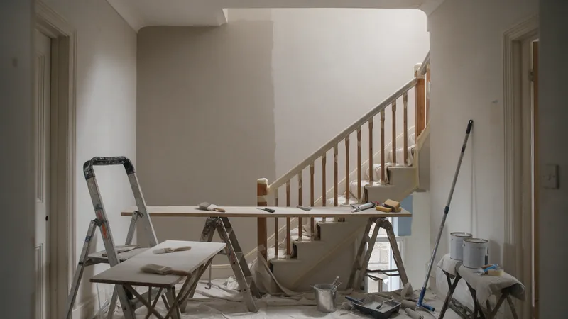
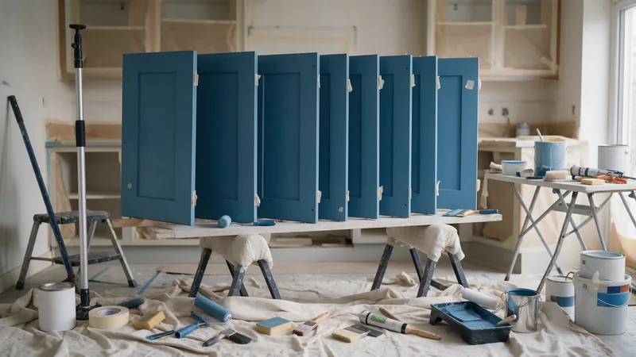

Our work
Twelve sample jobs.
Coatsby is a demo, so none of these happened. They are the twelve jobs a decorating firm round here would actually have on in a month, with pictures generated for this site rather than taken on a job.
12 jobs
 Generated photoCutting in the first wallLytham St Annes · Sample
Generated photoCutting in the first wallLytham St Annes · Sample Generated photoLaying off a long wallPoulton-le-Fylde · Sample
Generated photoLaying off a long wallPoulton-le-Fylde · Sample
Generated photoHall, stairs and landingKirkham · Sample Generated photoA flat turned round between tenantsFleetwood · Sample
Generated photoA flat turned round between tenantsFleetwood · Sample Generated photoThe front, back in colourThornton-Cleveleys · Sample
Generated photoThe front, back in colourThornton-Cleveleys · Sample Generated photoFrames cut inLytham St Annes · Sample
Generated photoFrames cut inLytham St Annes · Sample Generated photoHanging off a plumb linePoulton-le-Fylde · Sample
Generated photoHanging off a plumb linePoulton-le-Fylde · Sample Generated photoMatched at every seamLytham St Annes · Sample
Generated photoMatched at every seamLytham St Annes · Sample Generated photoDoors off and flatKirkham · Sample
Generated photoDoors off and flatKirkham · Sample Generated photoA long run of skirtingThornton-Cleveleys · Sample
Generated photoA long run of skirtingThornton-Cleveleys · Sample
Generated photoCabinet doors dryingFleetwood · Sample Generated photoBack on and levelPoulton-le-Fylde · Sample
Generated photoBack on and levelPoulton-le-Fylde · SampleFilter them, or tap one for the detail. Every one is a made up sample.
What you are looking at
Why a real firm should show the middle of the job.
Every decorator shows the same photograph: a finished room, one wall, good light, taken on a phone at five o'clock on the last day. They all look identical, and not one of them tells you whether the firm prepares properly or just paints over things.
The pictures worth showing come from the middle. The wall after filling and before any paint, with the patches all over it. The caulk run along a skirting that used to have a black gap. A door sanded back with forty years of brush marks flattened out. The hall ceiling after the stain was blocked rather than covered. On a real site this page would be your own phone photographs of exactly that, with one line each on what it turned out to be. That is the page that wins the job off the firm who only photographs the last hour.
 Generated photo
Generated photoGenerated for this demo.
Want somebody to look at yours?
Tell us which rooms and your postcode and we will come and see what the preparation really is.